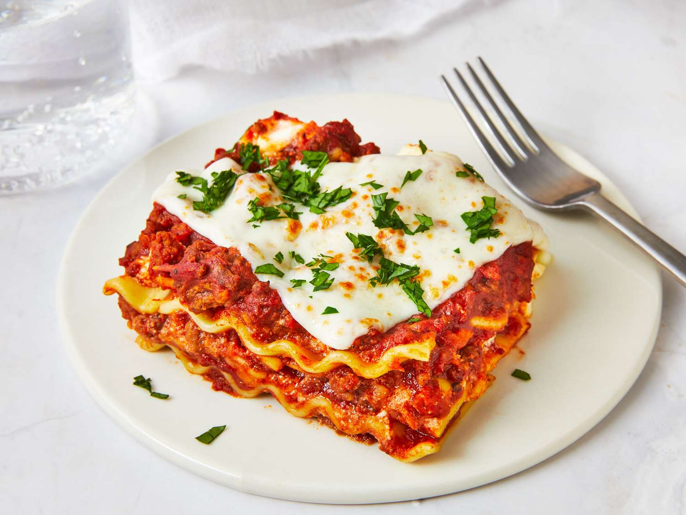

Home
Make lasagna

Lasagna is a rich, layered pasta dish originating from Italy. It features alternating layers of wide lasagna noodles, savory meat sauce, and creamy ricotta cheese. Melted mozzarella and Parmesan cheese top the dish, creating a golden, bubbly crust. The flavors of herbs like basil and oregano enhance its aromatic appeal. Served hot, it’s a comforting and satisfying meal perfect for gatherings.
< Ingredients:
For the Meat Sauce:
1 pound ground beef (or a mix of beef and Italian sausage)
1 onion, finely chopped
2 cloves garlic, minced
1 can (28 oz) crushed tomatoes
1 can (6 oz) tomato paste
1 can (15 oz) tomato sauce
2 teaspoons sugar (optional, to balance acidity)
2 teaspoons dried basil
1 teaspoon dried oregano
Salt and pepper to taste
For the Cheese Mixture:
15 oz ricotta cheese
1 egg, lightly beaten
1/4 cup chopped fresh parsley (or 2 tablespoons dried)
1/2 cup grated Parmesan cheese
Other Ingredients:
9 lasagna noodles, cooked according to package instructions
4 cups shredded mozzarella cheese
Instructions:
Make the Meat Sauce:
In a large skillet, cook the ground beef with the chopped onion over medium heat until browned.
Add the garlic and cook for another minute.
Stir in the crushed tomatoes, tomato paste, and tomato sauce.
Season with sugar, basil, oregano, salt, and pepper.
Simmer for at least 30 minutes, stirring occasionally.
Prepare the Cheese Mixture:
In a bowl, combine the ricotta cheese, beaten egg, parsley, and Parmesan cheese. Mix well.
Assemble the Lasagna:
Preheat your oven to 375°F (190°C).
Spread a thin layer of meat sauce in the bottom of a 9x13 inch baking dish.
Place 3 lasagna noodles on top.
Spread 1/3 of the ricotta cheese mixture over the noodles.
Add 1/3 of the meat sauce on top, then sprinkle with 1 cup of mozzarella cheese.
Repeat the layers two more times, ending with a layer of meat sauce and the remaining mozzarella cheese on top.
Bake:
Cover with aluminum foil (to prevent sticking, either spray foil with cooking spray or make sure it doesn't touch the cheese).
Bake for 25 minutes, then remove the foil and bake for an additional 25 minutes, until the cheese is melted and bubbly.
Rest and Serve:
Let the lasagna rest for about 15 minutes before slicing.
Serve hot and enjoy!